Videojuegos y experiencias
Conceptualización, narrativa, diseño, documentación, producción y recursos para experiencias interactivas.
Toca el libro para abrirlo
Ex libris
Este libro pertenece a quien se atreva a soñar con mundos nuevos.
Escrito e ilustrado por
María Inés Cisterna Escobar
Ari · Studios Conari SpA
¿Cómo quieres conocer esta historia?
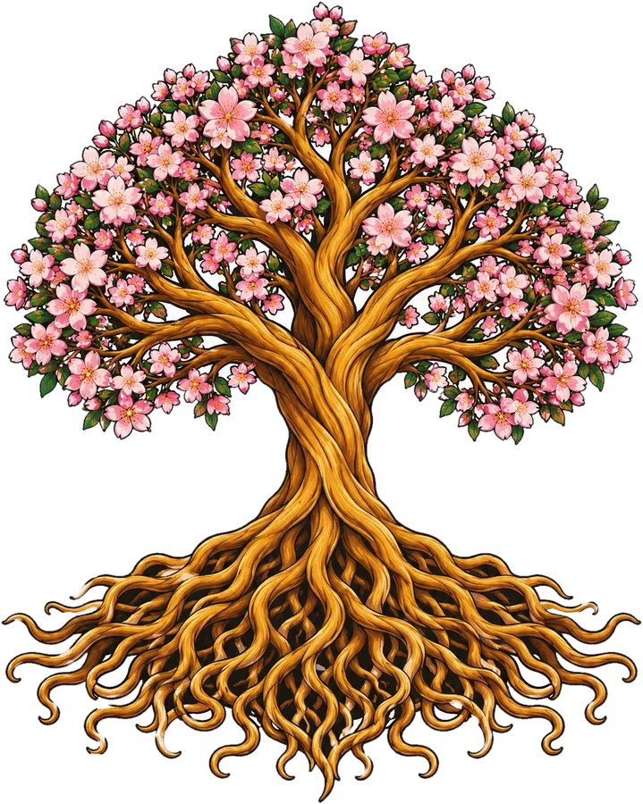
Capítulo I
Esta soy yo, María Inés, aunque todos me dicen Ari. Tengo treinta y dos años, mis lentes de siempre, mi pelo ondulado de nuevo… y la cabeza llena de mundos por crear.
Cada una de esas vidas tiene su capítulo. Pero para entender cómo llegué hasta aquí… hay que volver al principio.
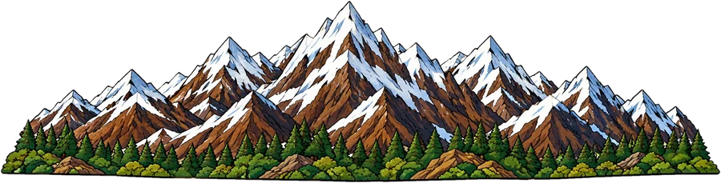
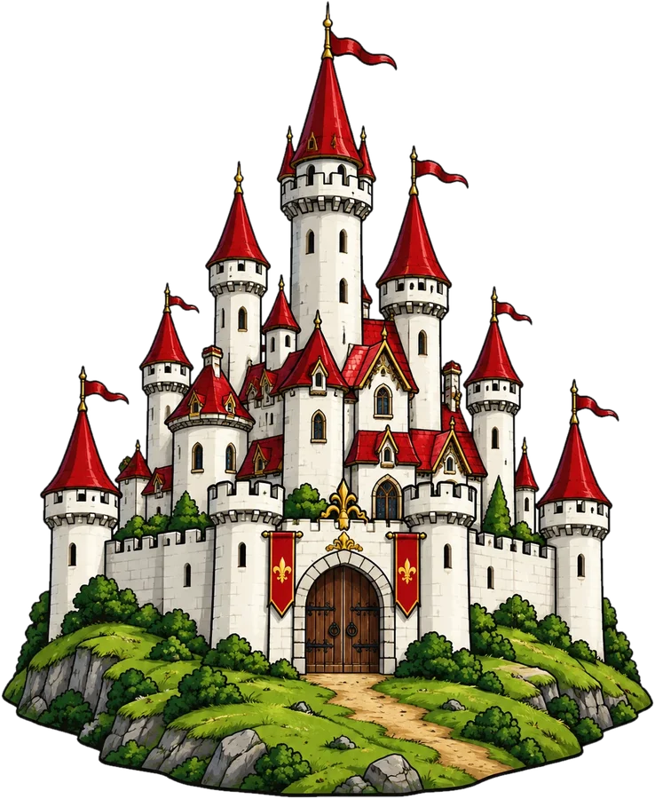
Capítulo II
Había una vez una niña de rulos color miel y lentes enormes, de esos de poto de botella, que vivía soñando con princesas, castillos y dragones. Mira cómo fue caminando… y transformándose.
Capítulo III
Durante cerca de cinco años fui matrona en hospitales, en CESFAM y hasta en un camión de salud móvil. Acompañé a mujeres en todas las etapas de la vida —adolescentes, embarazadas, madres, mujeres adultas y mayores— y me encantaba enseñar clínica a las alumnas en el CESFAM: eso me hacía feliz. Cambié muchas veces de pelo y de uniforme, pero nunca de cariño.
Estas son algunas huellas que dejé en el camino:
Ahí descubrí que ordenar la información también es una forma de cuidar… y que los datos cuentan historias de personas reales.
Capítulo IV
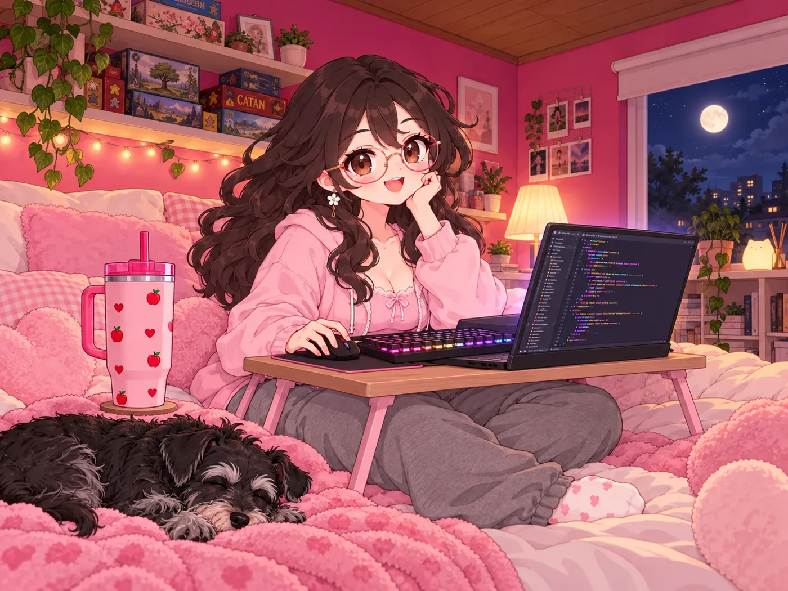
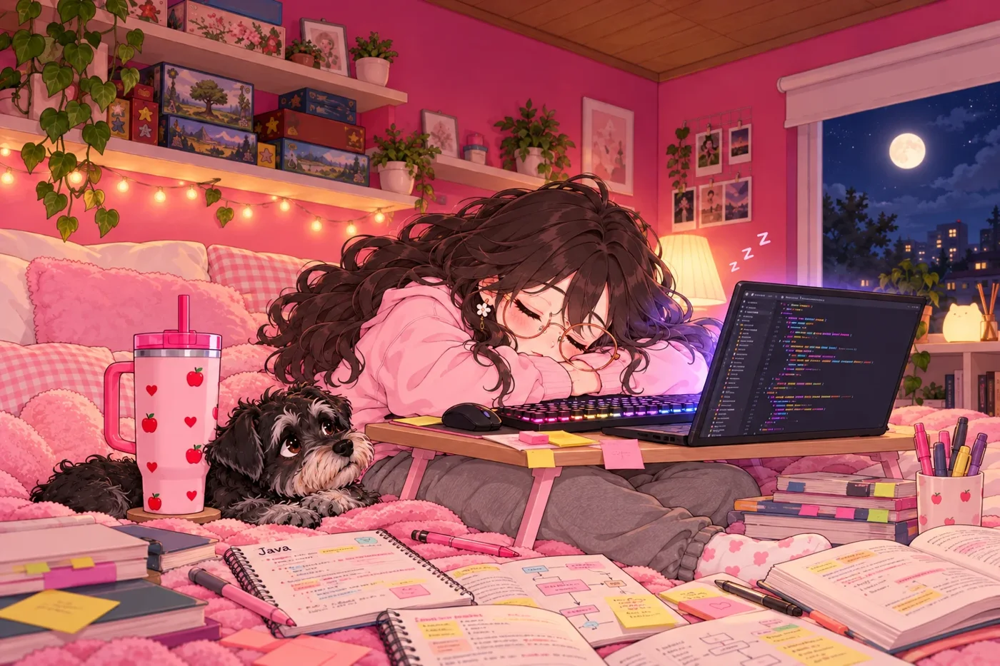
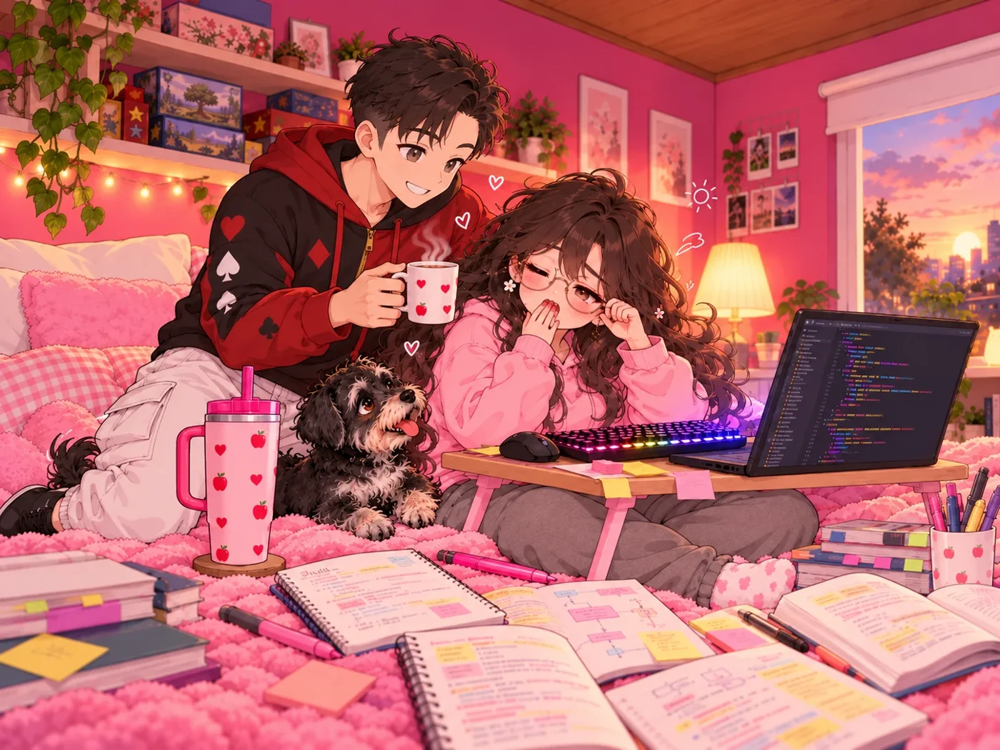
Para construir mi reino tuve que aprender el idioma de las máquinas. Noches enteras sobre la cama, con mi mesita, mi jarro gigante y mi perrito dormido al lado… hasta quedarme dormida entre cuadernos. Y cada mañana, Coen me despertaba con un café para seguir.
Mi primer conjuro en Java fue una calculadora. Pulsa las teclas: la página de la izquierda escribe el mismo cálculo en Java.
✦ Logro desbloqueado
En junio de 2026 terminé el curso Desarrollo de Aplicaciones Full Stack Java: 480 horas de SENCE y Talento Digital. Mi medalla es digital y se puede verificar.
Y sigo aprendiendo: estoy estudiando el Certificado de Análisis de Datos de Google en Coursera, con cinco cursos aprobados.
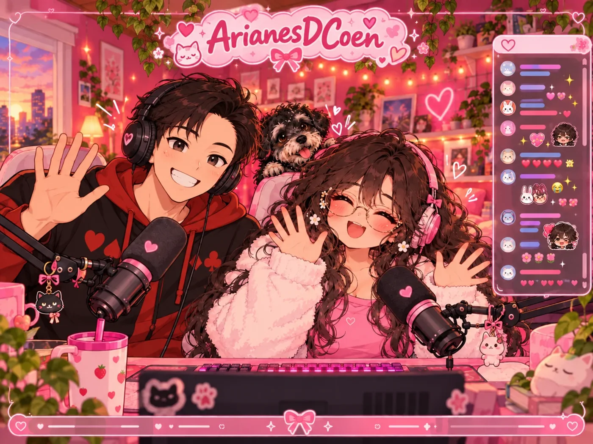
Matrona titulada · Desarrolladora Full Stack Java · Diseño y producción editorial · Análisis de datos
Capítulo V
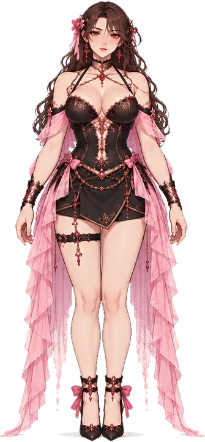
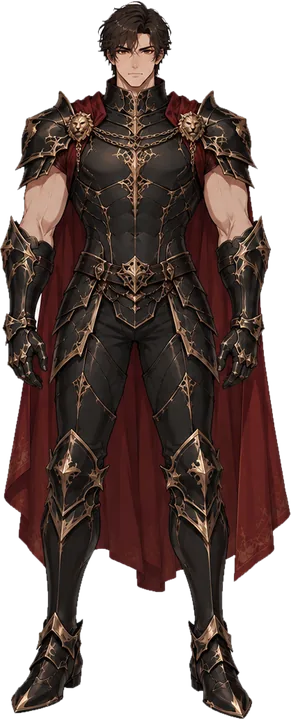
Kevin y yo jugábamos, hacíamos stream y soñábamos juntos. Un día, el trazo de un lápiz dio vida a nuestros héroes: Ari, la asesina ágil de cintas rosadas, y Coen, el caballero de capa carmesí. Línea a línea, color a color, se encontraron… y se tomaron de la mano.
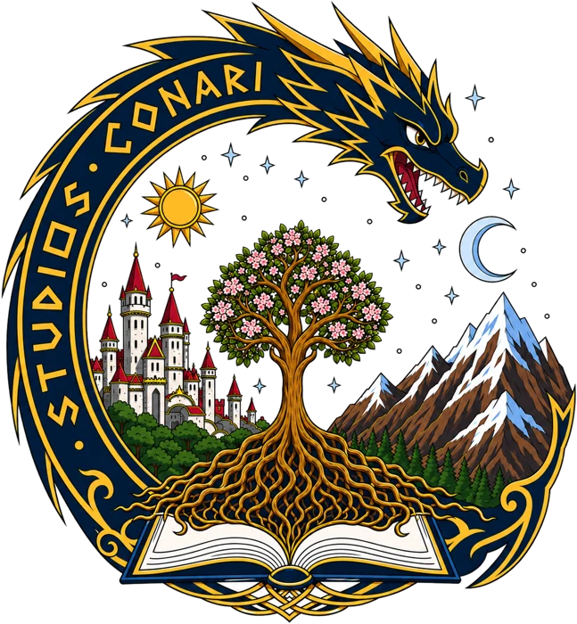
Juntos fundamos Studios Conari SpA, un estudio creativo chileno que une narrativa, diseño, programación, datos y arte 3D para convertir ideas en videojuegos, aplicaciones y mundos propios.
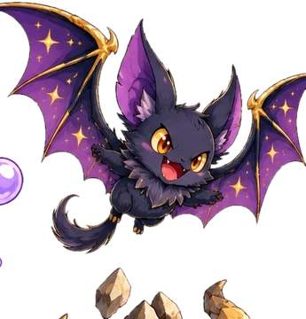
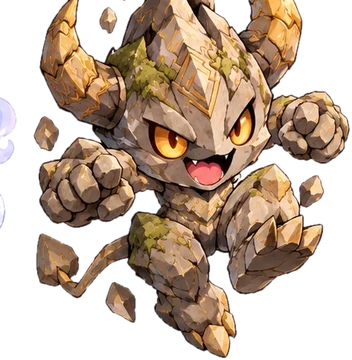
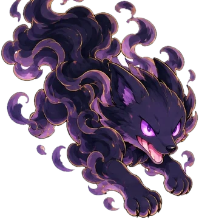
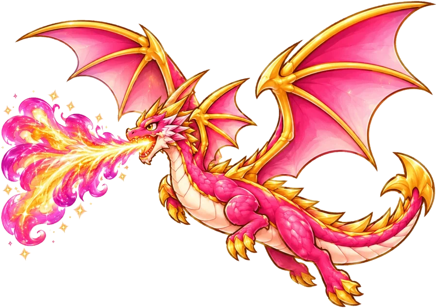
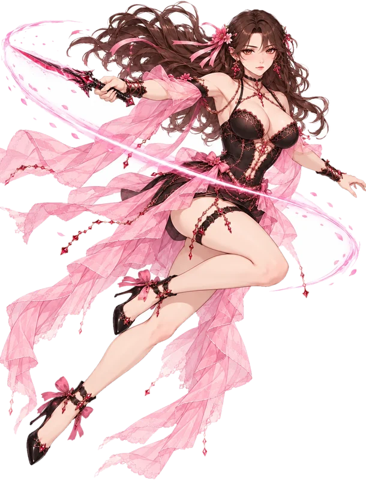
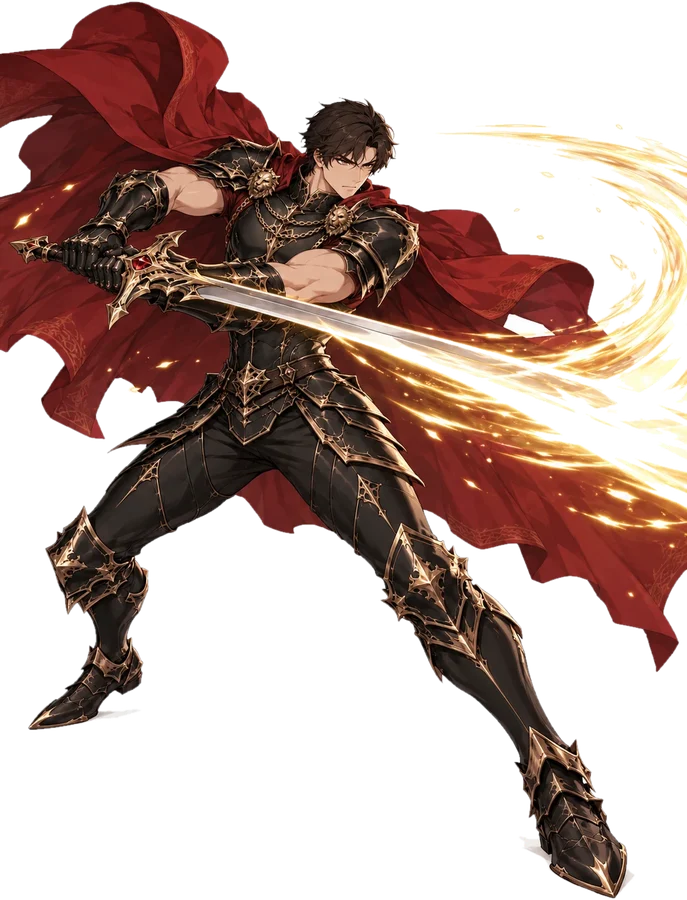
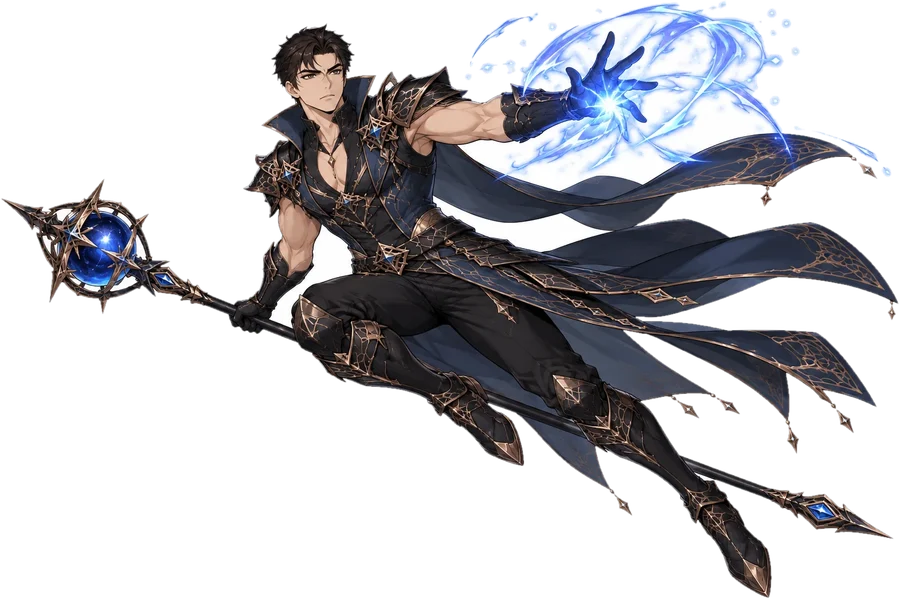
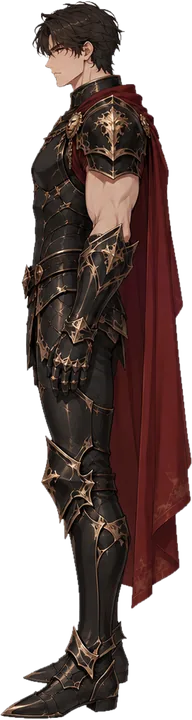
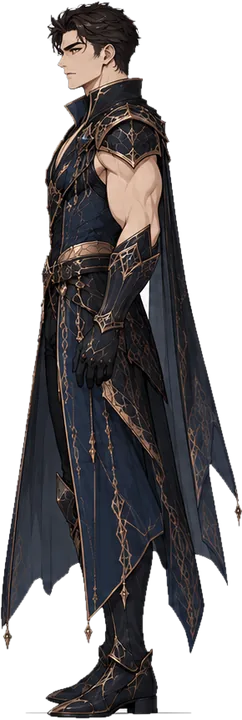
Entonces el libro se abrió de par en par y de sus páginas brotó un humo mágico…
Del humo nacieron la cordillera de los Andes, el gran árbol de sakura, el sol, la luna y un castillo en lo alto. Y el dragón rosado despertó.
Pero de la niebla salieron monstruitos. Ari saltó con su daga, ágil como el viento, y Coen alzó su espada para protegerla.
Desde el cielo llegó Rancek volando sobre su báculo, y el dragón lanzó su fuego rosado. ¡Los monstruitos huyeron!
Cuando la niebla se despejó, los tres caminaron juntos hacia el castillo. Porque, a pesar de las dificultades, siempre llegarán a la cima: al castillo soñado.
Capítulo VI
Un día, Ari y Coen caminaron hasta la tienda mágica de Rancek. Ahí el mago vende de todo: joyas, vestidos, perfumes y trajes encantados. Tú manejas la caja: elige lo que compran, aplica un descuento, cobra… ¡y entrega la boleta!
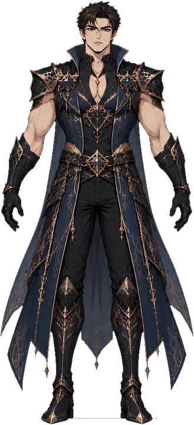
¡Bienvenidos a mi tienda! ¿Qué se les ofrece?
¡Algo bonito para la fiesta del reino! ✧
Los 68 productos y precios vienen de mi proyecto Java Ecommerce-Backend-M4 ↗.
1Elige productos y descuento
2Revisa el recibo y paga
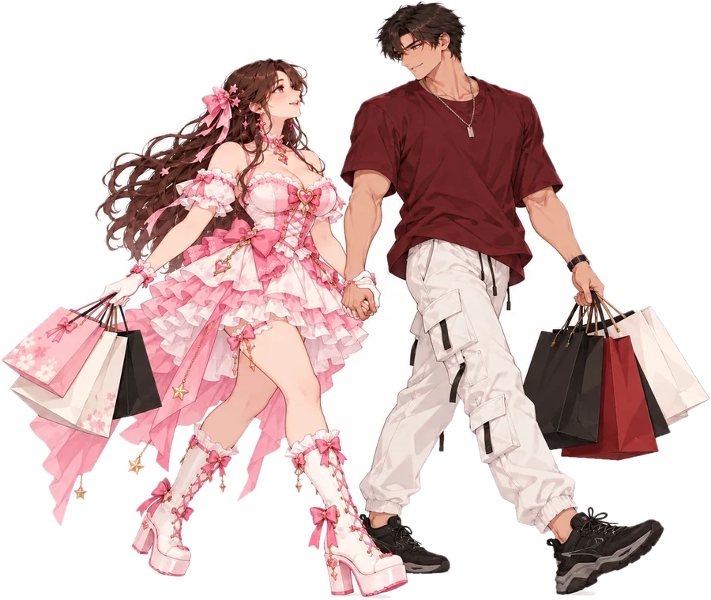
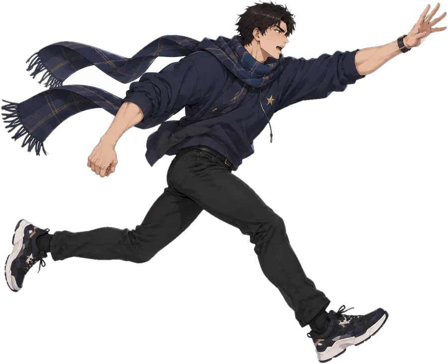
¡Espérenme! ¡Yo también voy!
Con sus compras puestas —Ari con su vestido de chica mágica y sus botas de plataforma, Coen con su jogger blanco y su polera burdeo— salieron a pasear por el reino… y Rancek cerró la tienda a toda prisa para correr detrás de ellos.
Capítulo VII
La tiendita creció hasta convertirse en un mercado entero: Magical Alliance, mi proyecto final Full Stack Java. Tiene registro e inicio de sesión por roles, catálogo con filtros, carrito, cupones, pedidos, historial de compras, control de stock y un panel para administrar todo.
En la vitrina mágica puedes recorrer la tienda como clienta o como administradora, llenar el carrito y ver cómo cambia el stock.
Capítulo VIII
Nunca dejé de dibujar. Aprendí sola: primero con papel, lápices y pintura; después con tableta, redibujando hasta encontrar mi propio trazo.
Así nace cada ilustración: primero la línea… y después el color.
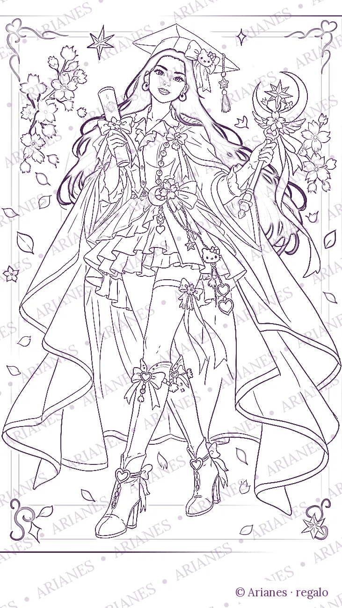
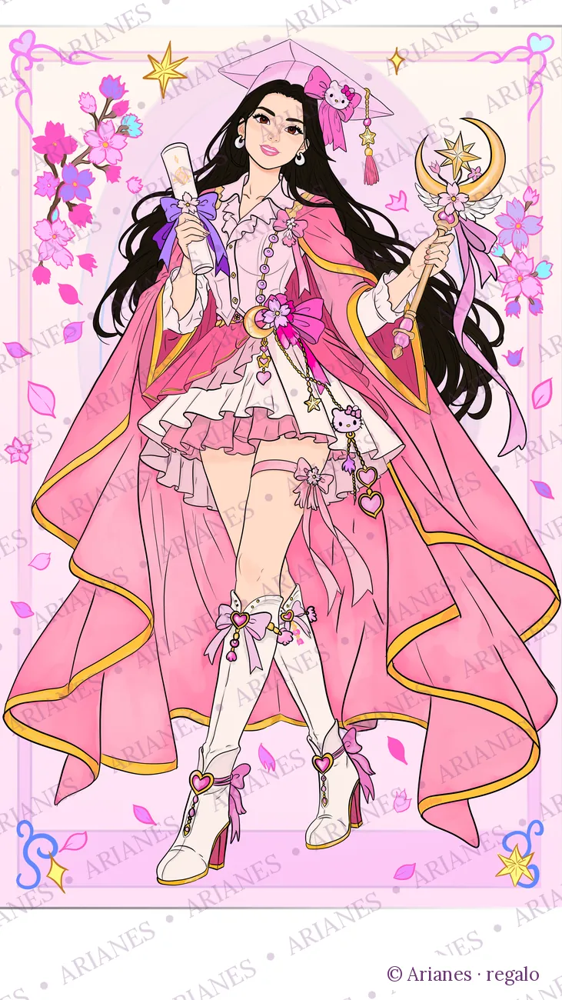
Y un día, todas mis criaturas se juntaron en una misma página para saludarte.
Capítulo IX
En lo alto de la torre vive un oráculo que guarda los colores y las canciones favoritas de quienes lo visitan. Cuéntale los tuyos y mira cómo ordena lo que aprende: así trabajo con los datos.
Capítulo X
Cuando el trabajo termina, se abre el salón de los juegos: bloques encantados, un jardín de gemas lunares y un cielo de constelaciones que esconden dibujos. Todos hechos a mano en JavaScript.
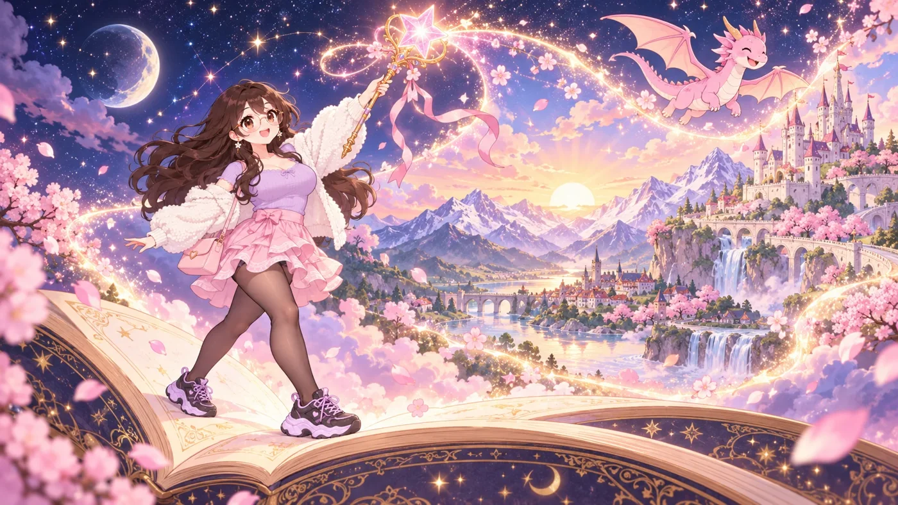
No es el fin… es solo el inicio.
A pesar de los obstáculos, siempre debes alcanzar tu sueño.
¿Escribimos juntos el próximo capítulo?
Desarrollo, diseño, videojuegos, datos y salud pueden encontrarse en una misma conversación.
Fin del primer tomo… continuará ✦ © 2026 María Inés Cisterna Escobar y Studios Conari SpA